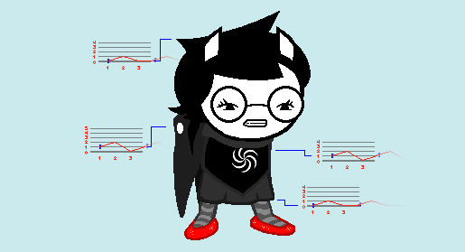

A thorough look at idle loops across Homestuck.
Made up of 4 Frames, each 0.2 seconds in length
Hey, My name is Boogs and this is an article looking at Idle animations across Homestuck.
I'll start with this GIF I made myself of Kanaya to demonstrate how to read these graphs.
The lines extending from the Sprite track a particular point in a body part, Ideally one I could locate over and over easily, like the tip of a hair or the last in a row of pixels.
The graphs show the position of that point over the looping frames, starting from its initial position of 0, and changing as it fits on the vertical axis, as the frames tick forward horizontally.
The ticker moves at a faster framerate than the original GIFs to help follow the motion.
5 Frames, 0.08s per frame
An excellent, simple bouncy animation.
Odd-numbered frame counts in idle loops are quite unique,
but a strength this one has is, every part here gets a rest moment where it doesn't move,
a luxury 4 frames may not have been able to afford.
Pixel-specific stuff like the hair tips bouncing around is almost exclusive to Collide animations,
as multiple different artists with different styles worked on those.
6 Frames, 0.1s per frame
Jade from [S] Strife!!!, featuring a new graphing tool, Magnified pixel view, to show 2 axis of movement at once.
I'll expand on it later.
An immediately unique thing about this loop is the fact Jade's torso doesn't move, only her lower skirt.
The "front" (right) leg moves one more pixel than the other one, which is a nice touch.
Both legs, the gun and the arms all return to their original position by frame 6,
solidifying it as the anchor of the motion.
5 Frames, 0.1s per frame
Another solid 5 frame cycle, save for that oddly jiggling torso,
bouncing around in that weird way.
I like how the sword moves in just a slight delay after the head,
giving some variance to the motion.
4 Frames, 0.2s per frame
A "bad" animation.
(This document is highly subjective, by the way.)
There's too much uniquer pixel changes for no clear reasons, cluttering the focus of the animation and
making the GIF look "mushy" and almost broken, like the pixels aren't displaying right.
The jagged, sharp jumps in positions are eased at all, making for a very clunky result.
3 Frames, 0.2s per frame
Note how "gliding" the looping end of the upper torso graph looks compared to the start, Worth pointing out, the lower skirt and hair share a graph shape, 6 Frames, 0.2s per frame Here's an entire loop graphed in 2 axis using Magnified Pixel View, I later decided there needs to be some 2D graph to keep an eye on the frame count, but this was still worth a try. These graphs really help get a feel for the Weight of these movements: Another good detail (that a standard graph would show better) is the Shirt moving one more pixel then the skirt does. Also, the particular dots I tracked down are visible on Rose. 6 Frames, 0.2s per frame The best usage of magnified view yet. Nepeta's sharper angles on the head bop but subdued movements in the legs and torso help The claws are darting one after the other like flies in big horizontal movements, 6 Frames, 0.1s per frame YEAH DAWG!!!! This idle is perfect in so many ways. The weight on the head is perfectly piston-esque, too. 6 Frames, 0.15s per frame Ignore the dating HUD. Once I added a "leg state tracker", I felt like that was necessary. I really like this idle, the head and arms arcs are so swirly, fitting of the jester garbs. The smooth movement of the torso combined with the legs shifting sideways when its low enough give GIF a nice anchor while the rest can flail around some more. Hey, thanks for reading the whole thing.
you can feel how effectively this particular follow helps the tiny loop flow.
and so do the cape and torso, but those move in opposite directions.
mostly made as a visual experiment by me.
Look at how much of a swing the fists have, and how clearer the head arc becomes.
I found more efficient methods than these later, but they help grasp the idea of the magnified view a little here.
I didn't track the tail, but who cares.
get her particular bounciness through.
while not being in total opposite timing, just slightly delayed.
The movements on the torso and legs are super linear,
but the jerkiness on the lower body and head give it that mechanical tinge it needed.
The way the entire animation compresses and relieves itself is just right.
This gif is also extra smooth, being at x3 the tracking speed of the original, since 0.15s splits nicer.
They almost feel like hammers being swung from side to side.
If you want an example of how to use these in a panel well, I discussed that in this article.
Have a snack for the road.